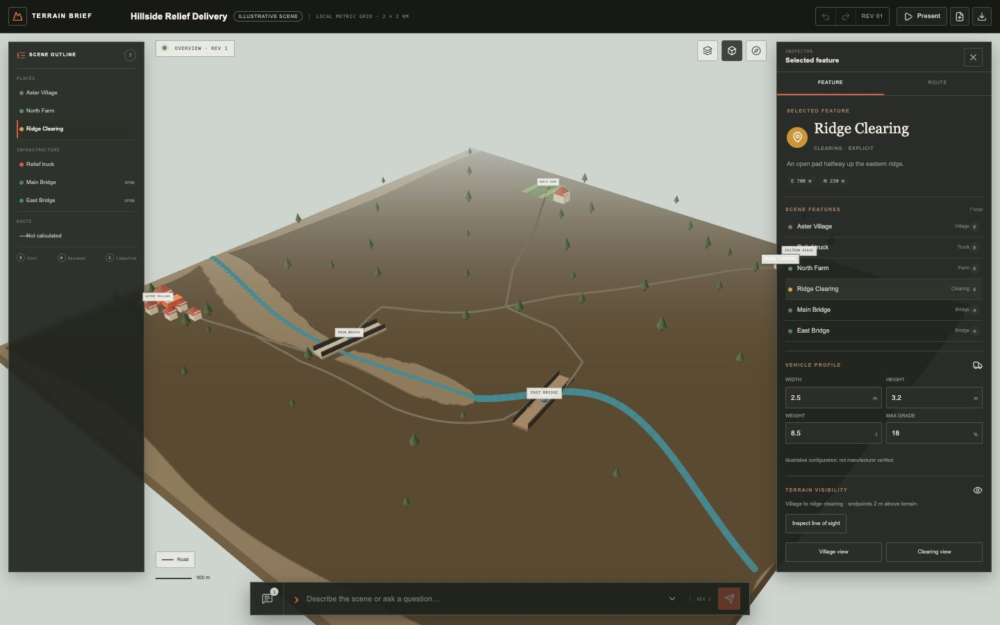
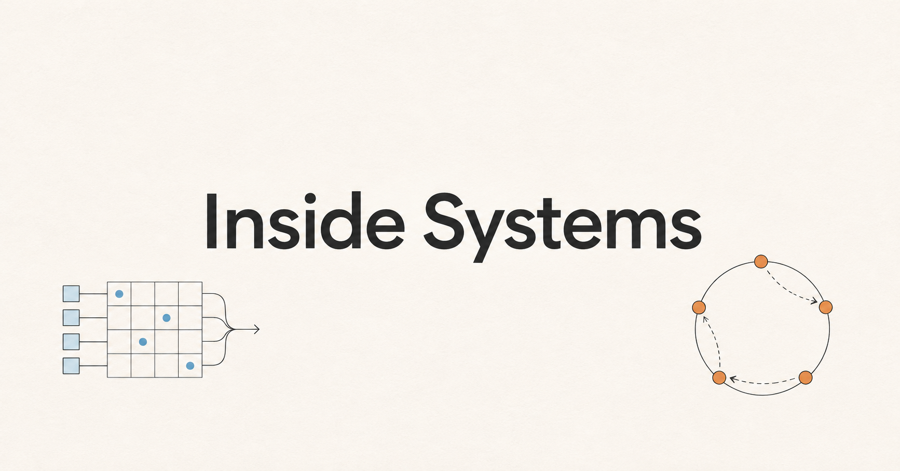

Terrain Brief
An experiment for describing, exploring, and changing a landscape in 3D.
I’m a software engineer in Austin, working on database infrastructure at Palantir. Previously, I built software with federal teams. Outside work, I’m building interactive ways to understand systems and experiment with AI.
Working experiments for making complex systems easier to see, question, and understand.

An experiment for describing, exploring, and changing a landscape in 3D.

Interactive guides to how databases store, find, and move information.
A fictional investigation about asking good questions and connecting evidence.
Selected work across database infrastructure, reliability, and public-sector deployment.
July 2022–present
I like a little chaos. Things breaking are interesting especially when I’m not the one who broke them. I enjoy following the clues, figuring out what went wrong, and understanding the system a little better afterward. That curiosity also keeps me building things and experimenting with AI. Outside of work, I like cooking, eating what I cook, and playing pickleball.